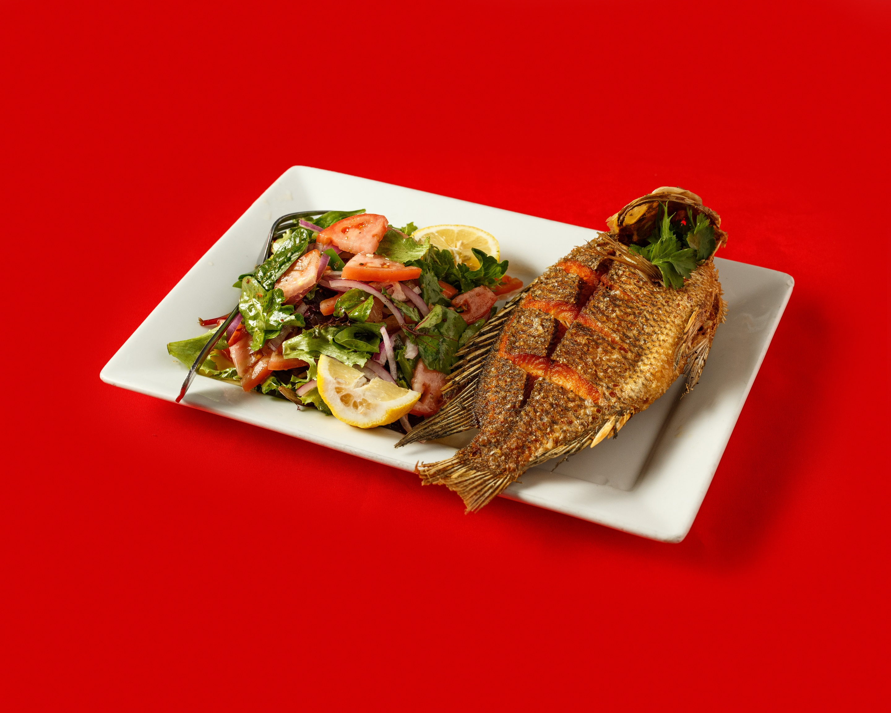
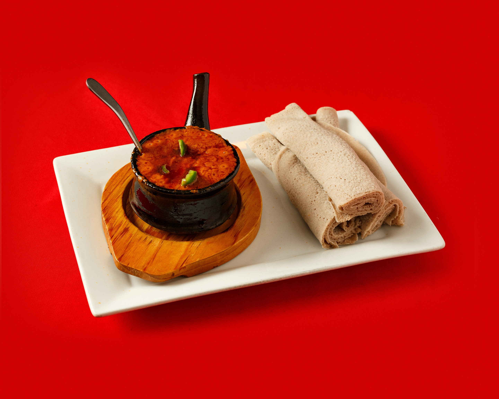
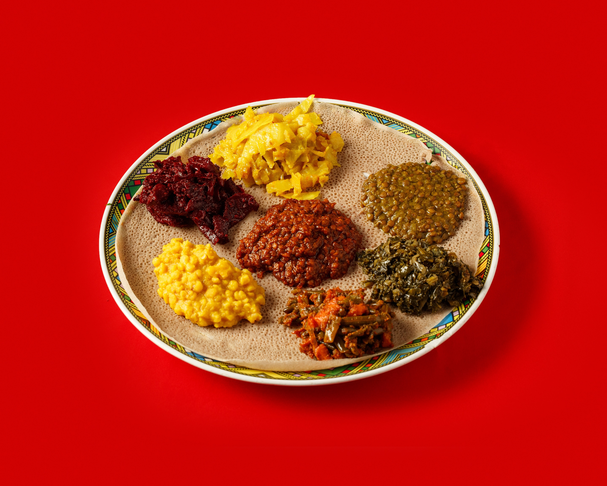
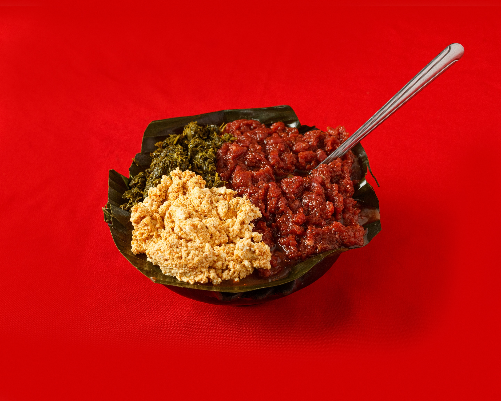
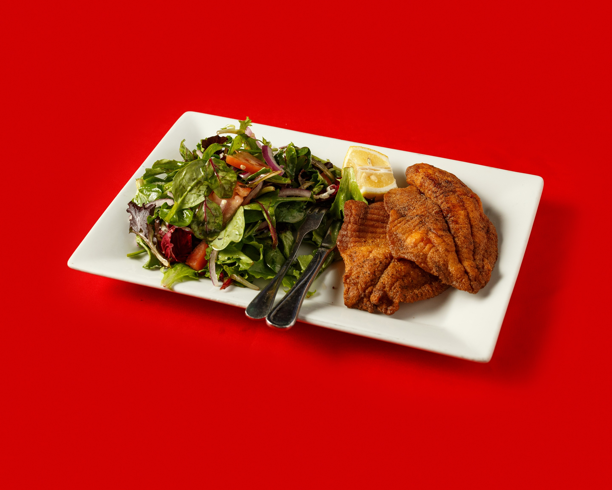
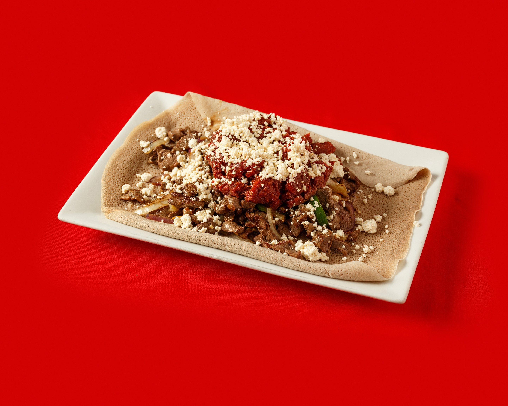

Welcome to our family-run Ethiopian restaurant located in the heart of Downtown Silver Spring, MD. We are proud to serve authentic Ethiopian cuisine, made with love and care using traditional techniques and recipes passed down through generations.
Our restaurant is owned and operated by a family who has a deep passion for sharing the flavors and culture of Ethiopia with our community. We believe that food is a powerful way to connect people and foster understanding, and we strive to create an atmosphere of warmth and hospitality for all of our guests.
Our menu features a range of classic Ethiopian dishes, including our signature injera, a delicious and nutritious sourdough flatbread made from teff flour, and a variety of flavorful stews and vegetable dishes. Our dishes are prepared with fresh, locally sourced ingredients and authentic Ethiopian spices, resulting in bold and unforgettable flavors.
Whether you are a seasoned fan of Ethiopian cuisine or new to the experience, we invite you to join us for a meal that will delight your taste buds and nourish your soul. Our friendly and knowledgeable staff are always happy to answer any questions you may have about our menu or Ethiopian culture.
Thank you for considering our restaurant for your dining experience, and we look forward to welcoming you soon.






Sunday – Thursday: 12 PM – 12 AM
Friday – Saturday: 11 AM – 1 AM